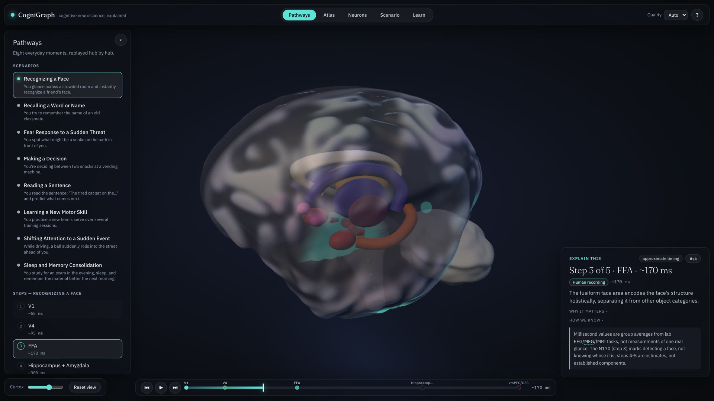

Pathways
Eight everyday moments, replayed hub by hub.
Recognising a face, recalling a word, a fear response, making a decision, reading a sentence, learning a motor skill, shifting attention, sleep consolidation. Each step opens with one sentence, the reasoning and the evidence behind it. Motor learning and sleep consolidation unfold over much longer timescales and are marked schematic.
There is also a 24-trial Stroop task, about a minute long, so you can put your own reaction time next to the timeline. It runs and stays on your device.
Try
Press space to play. Click a timeline marker to jump to that step.